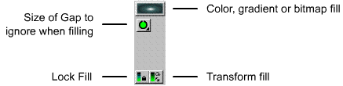
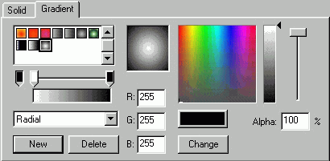
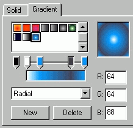
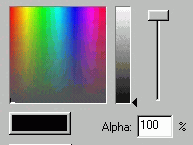

Using gradients


 Downloadable FLA
Downloadable FLA
Gradients are a powerfull feature of Flash. Use them to create almost photorealistic vector images, only with minimal filesize. This will help you to create a shaded sphere, which will probably teach a whole lot
Step 1. Select the pencil tool, and draw a circle.
Step 2. Select the fill tool.

Notice the color or gradient square, it can also be used for Bitmap or texture fills. Just break up a bitmap, and use the dropper tool.. The gap size is useful if you want to fill some outlines that aren't completely connected. The lock fill, is mostly for gradients. Useful if you wan't to change the color only of a gradient already created. Transform fill allows you to move, scale and skew a gradient.
Step 3. Click the color or gradient square. Now a list of colors appear. The gradients in the bottom are the interesting ones. Now we would like to create a custom gradient. Click the "color palette symbol" in the extreme bottom.
Step 4. Select the gradient tab, and click radial, then new.

Step 5. Notice the arrow on the left gradient. The selected arrow, allows you to create more sequences of the gradient. Add two new arrows to the existent, and add colors like this:

Step 6. Now click "Change", and your gradient is ready. Close the window.
Step 7. Fill the upper right corner of the drawn circle. Now you have a shaded sphere-like object.
Note: this object has already become over-used on Flash sites worldwide, so use with care!
Advanced Gradients
The trick to creating gradients, is knowing how to use Alpha.

You can see the alpha bar to the right. Alpha indicates the current objects transparency, so having an alpha of 50%, means the object is 50% transparent.
This is useful, e.g. for creating "snowflakes", stars, glow, lensflares, "fireflies" etc.
The most easy example, is the glow effect. Simply create a gradient, with two colors, ranging it from white, to a 0% white, and you have a glow. Place this glow above or below any of your symbols, and you have a cool glow effect.
That's my tips on advanced gradients.